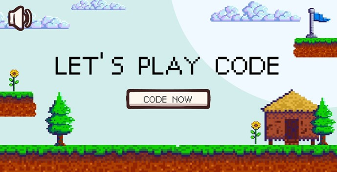
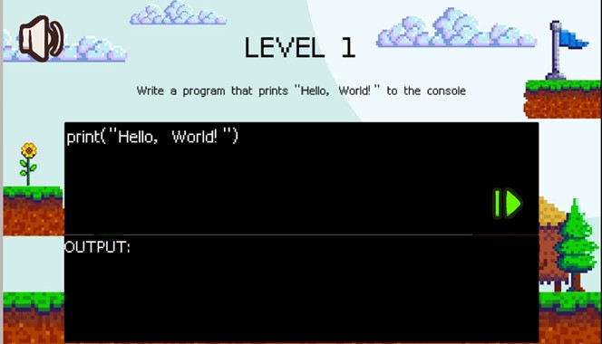
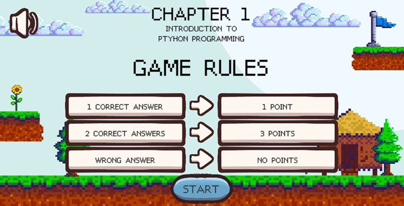
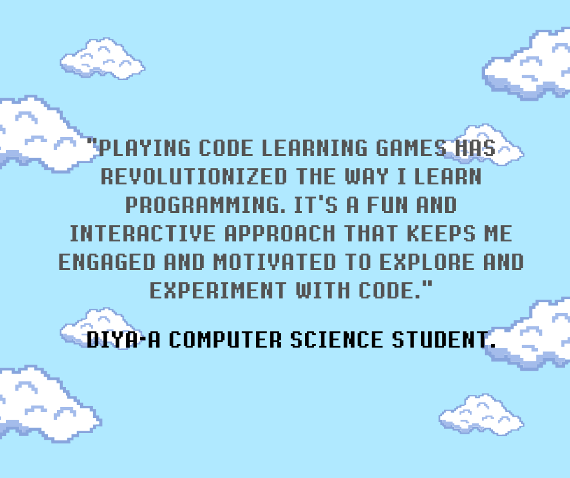
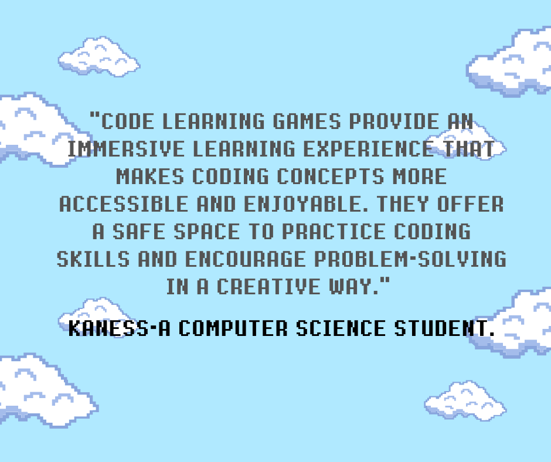
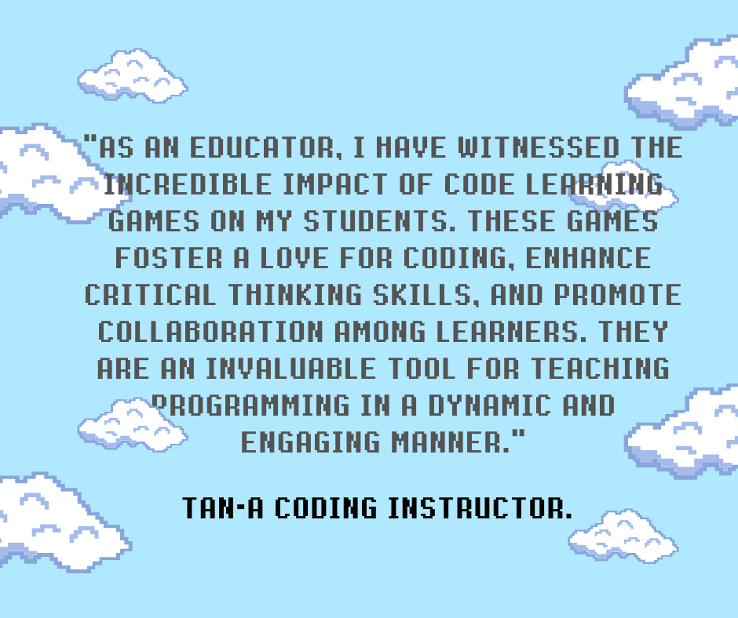

Code Crush: Unleashing the Programmer Within!
Welcome to Code Crush, the ultimate adventure in the realm of programming! Dive into a captivating world where coding knowledge is the key to unlocking endless possibilities. Sharpen your skills, solve challenging puzzles, and conquer each level to become a coding virtuoso. Get ready to crush code like never before and unleash your full potential as a digital maestro!



FAQs
1. What is Code Crush?
Code Crush is an immersive code learning game that aims to make programming fun and engaging. It provides a gamified experience where players can enhance their coding skills, solve puzzles, and progress through various levels of complexity.
2. Who is Code Crush suitable for?
Code Crush is suitable for both beginners who are new to coding and experienced programmers looking to sharpen their skills. The game is designed to accommodate different skill levels, offering challenges for everyone from aspiring coders to seasoned developers.
3. What programming languages are covered in Code Crush?
Code Crush covers Python. The game aims to provide a well-rounded learning experience by introducing players to the fundamentals of different languages.
4. Is any prior coding knowledge required to play Code Crush?
No prior coding knowledge is necessary to play Code Crush. The game is designed to be beginner-friendly, providing step-by-step tutorials and guidance to help players grasp the basics of coding. However, experienced coders can also benefit from the game's advanced challenges.
Why Choose Code Crush?
Code Crush stands out among other Python learning games for several reasons:
- Engaging and Interactive: Code Crush provides a gamified experience that makes learning Python enjoyable and interactive. Through challenging puzzles, interactive challenges, and quizzes, players can actively apply their knowledge and reinforce their understanding of programming concepts.
- Suitable for Beginners and Experienced Programmers: Whether you're a beginner with no prior coding knowledge or an experienced programmer looking to enhance your skills, Code Crush caters to learners of all levels. The game offers a smooth learning curve, starting from the basics and gradually progressing to more advanced topics.
- Real-World Application: Code Crush incorporates real-world scenarios and examples to demonstrate the practical application of Python. By solving coding challenges inspired by real-life situations, players can develop problem-solving skills and gain a deeper understanding of how Python can be used in various contexts.
- User-Friendly Interface: The game's interface is designed to be intuitive and user-friendly. Even if you have no prior coding experience, you'll find the game easy to navigate. Code Crush provides hints, feedback, and tutorials to assist you in learning and overcoming challenges.
- Flexibility and Progress Tracking: Code Crush allows you to learn at your own pace. You can progress through the levels at a speed that suits you, and the game tracks your progress, providing a sense of accomplishment as you advance. This flexibility ensures that learners can fully grasp each concept before moving on to the next.
With its engaging gameplay, comprehensive curriculum, and user-friendly design, Code Crush is an excellent choice for anyone looking to learn Python in an exciting and effective way.


